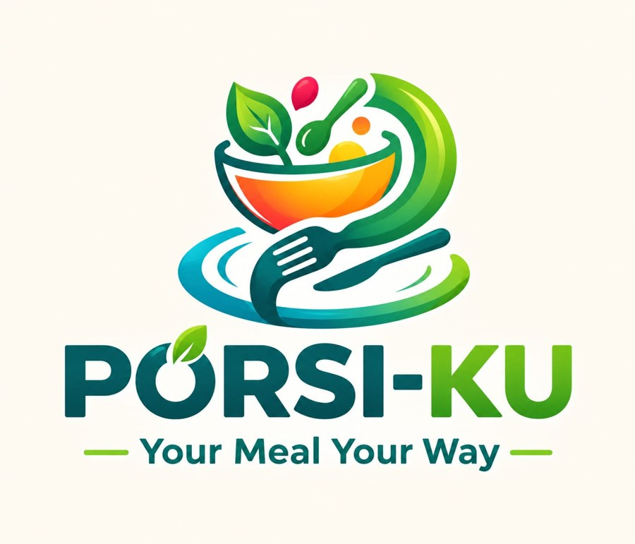
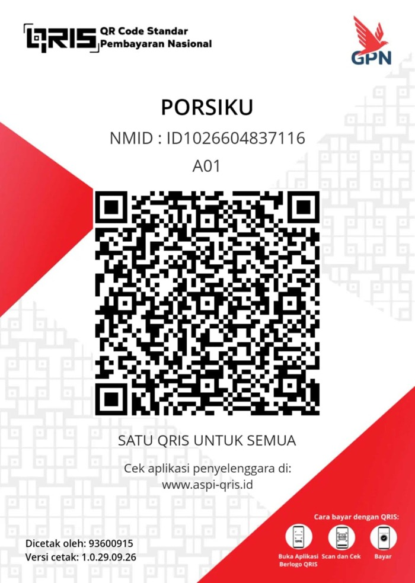

Your Meal
YourWay.
Masukin BB & TB, kami hitung IMT dan kebutuhan energimu (Harris-Benedict), lalu kasih menu yang porsinya disesuaikan buat kamu.

Masukin BB & TB, kami hitung IMT dan kebutuhan energimu (Harris-Benedict), lalu kasih menu yang porsinya disesuaikan buat kamu.

Bayar lewat QRIS, lalu datamu terkirim otomatis ke WhatsApp ahli gizi.

Scan pakai aplikasi bank atau e-wallet apa saja, lalu screenshot bukti bayarnya.
Setelah WhatsApp terbuka, lampirkan screenshot bukti bayar di chat. Konsultasi dimulai setelah admin mengecek pembayaranmu.